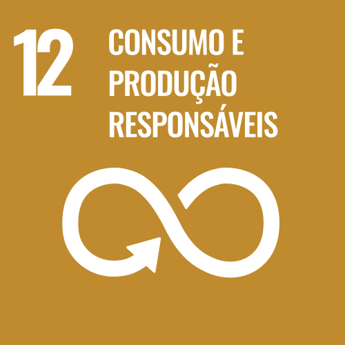

A REUTIlícias nasceu no ano de 2022, através da iniciativa de três jovens, futuros desenvolvedores de sistemas

Cintra

Matos

Falcuci
A proposta inicial do site é auxiliar no item 12 dos Objetivos de Desenvolvimento Sustentável da Organização das Nações Unidas (ONU)
Nosso foco é especificamente o item 12.3:
12.3 Até 2030, reduzir pela metade o desperdício de alimentos per capita mundial, nos níveis de varejo e do consumidor, e reduzir as perdas de alimentos ao longo das cadeias de produção e abastecimento, incluindo as perdas pós-colheita
Já o objetivo com a população, está no desenvolvimento de um site informativo, divertido, otimizado e de fácil acesso para todos. Disponibilizando ideias, técnicas e receitas que promovam o melhor reaproveitamento dos alimentos.
A REUTIlícias é um conceito guarda-chuva, com o foco em reaproveitar alimentos que fiquem disponíveis e gostosos para alimentar. No entanto, trabalhamos também com outros braços do mesmo projeto, conheça alguns deles:
Apesar de embrionário, a REUTIlícias é um projeto ambicioso, que sempre vai prezar pela saúde e bem-estar de toda a população.